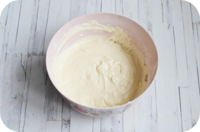
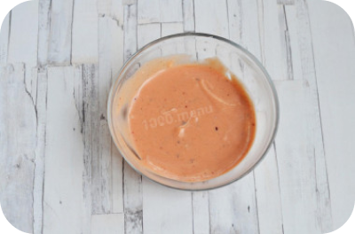
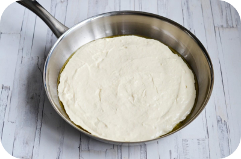
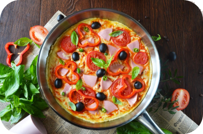

357 comments
35m
Bread floor
300g
Salt
1tsp
Olive oil
1tbsp
Bread floor
300g
Salt
1tsp
Olive oil
1tbsp
Make the base: Put the flour into a large bowl, then stir in the yeast and salt. Make a well, pour in 200ml warm water and the olive oil and bring together with a wooden spoon until you have a soft, fairly wet dough. Turn onto a lightly floured surface and knead for 5 mins until smooth. Cover with a tea towel and set aside. You can leave the dough to rise if you like, but it’s not essential for a thin crust.
Make the sauce: Mix the passata, basil and crushed garlic together, then season to taste. Leave to stand at room temperature while you get on with shaping the base.
Roll out the dough: if you’ve let the dough rise, give it a quick knead, then split into two balls. On a floured surface, roll out the dough into large rounds, about 25cm across, using a rolling pin. The dough needs to be very thin as it will rise in the oven. Lift the rounds onto two floured baking sheets.
Top and bake: heat the oven to 240C/220C fan/gas 8. Put another baking sheet or an upturned baking tray in the oven on the top shelf. Smooth sauce over bases with the back of a spoon. Scatter with cheese and tomatoes, drizzle with olive oil and season. Put one pizza, still on its baking sheet, on top of the preheated sheet or tray. Bake for 8-10 mins until crisp. Serve with a little more olive oil, and basil leaves if using. Repeat step for remaining pizza.
